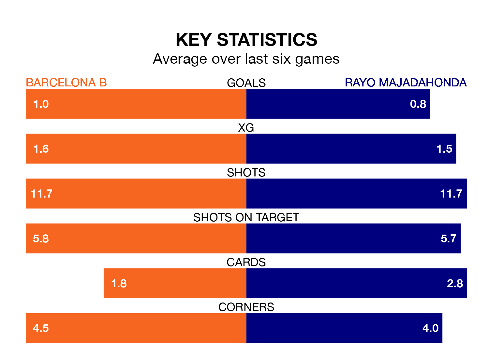

Barcelona B are heavy favourites to keep all three points at home in Sunday's late kick-off against Rayo Majadahonda.
Barcelona B, who sit sixth in Primera Division RFEF Group 1 with 23 games played, are priced at 1.6 to seal victory.
Sitting 10 places and 16 points behind them in the table, Rayo are 4.9 to win with *Betting Company*, while the draw is at 3.4.
With 31 goals in 23 games so far this season, Barcelona B are the league's joint-third-highest scorers with 1.3 goals per game. But they are conceding more than average too, letting in 25 goals at a rate of 1.1 per game.
Rayo, meanwhile, are below average scorers, with 0.8 goals per game, compared to a league average of 1.0. They have conceded 1.2 goals per game.
The home team are in mixed form in Primera Division RFEF Group 1, with three wins and a draw from their last six games.
With a win and four draws over that period, the visitors' form is worse – they have taken seven points from 18, compared to Barcelona B's 10.
Barcelona B's last match was on February 11, a 1-0 win against CE Sabadell, with Unai Hernandez Lorenzo getting the goal for Barcelona B.
Rayo drew 1-1 with Real Sociedad B last time out, also on February 11.
Updated: 09:02 (UTC), 13/02/24